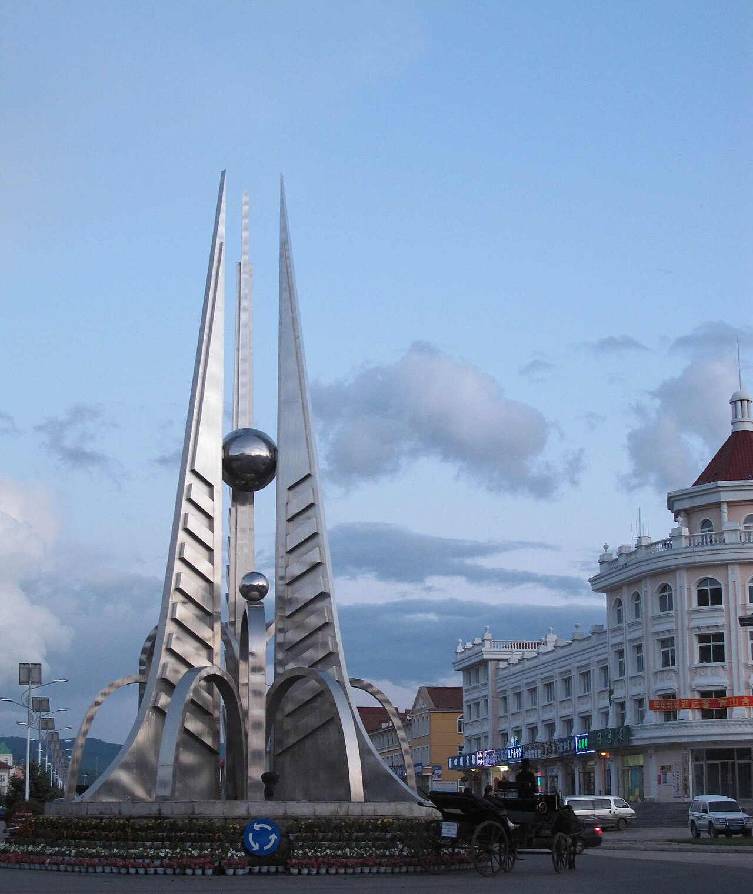

DAY18.9
北京 → 正蓝旗
出京直奔元上都，一天把草原门户踩实
- 元上都遗址世界文化遗产，忽必烈夏都。建议下午到，光线斜时城垣最出片
- 上都湖遗址附近开阔水面，傍晚走走，给长途车程收个尾
- 桑根达莱镇正蓝旗交通枢纽，今晚落脚，明天进 99 号公路


住禧华轩（朋友原订）
吃镇上蒙餐：手把肉、奶茶、烤羊排
提示当天车程偏长，早上早点出发；元上都留足 1.5–2 小时，别拖到天黑再赶路。
FRIEND'S ROUTE · 2026.8.9–8.16
去程向西北进锡林郭勒（元上都 → 99 公路 → 乌拉盖），再北上阿尔山； 回程折向扎鲁特、翁牛特（玉龙沙湖）回京。点右侧任意一天，地图只留那一段。
玩点、停靠、住宿都按朋友原表整理，方便直接对照出行。
出京直奔元上都，一天把草原门户踩实
住禧华轩（朋友原订）
吃镇上蒙餐：手把肉、奶茶、烤羊排
提示当天车程偏长，早上早点出发；元上都留足 1.5–2 小时，别拖到天黑再赶路。
进入 99 号公路，今天是去程最出片的车窗日


住生态公园汉庭 / 你好酒店（朋友原订）
吃西乌旗羊肉出名，晚上安排一顿手把肉
提示公路本身就是风景，留几个固定观景台就够，别每个路口都停。
白天玩乌拉盖，晚上按朋友安排住霍林郭勒

住金藏高尧乌拉蒙古包（6 人包，朋友原订）
吃乌拉盖或霍林郭勒安排烤全羊 / 手把肉
提示九曲湾尽量卡住日落前后；看完再回霍林郭勒住，别反过来。
出草原进大兴安岭，今晚住进阿尔山


住阿尔山聚优阁酒店（朋友原订，也可换市内同级干净快捷）
吃山货：榛蘑小鸡、蕨菜、柳蒿芽、冷水鱼
提示8 月阿尔山夜里凉，薄外套备一件。明天全天进公园，早点睡。
正题日：天池、三潭峡、石塘林一次走完


住继续住聚优阁 / 市内同级快捷（连住）
吃园内餐饮贵且少，酒店备干粮；中午可在天池镇简单解决
提示门票+园内交通提前在小程序预约。景区南北长，按园内推荐顺序走，别来回跑。
回程开始，不走回头路，折向科尔沁北缘

住扎鲁特城区汉庭 / 同级干净快捷
吃扎鲁特吃蒙餐、炖菜，吃稳一点
提示可汗山看得爽就行，别太晚下山；扎鲁特只是过渡夜。
回程玩点日：玉龙沙湖 + 响水荷花池


住汉庭赤峰翁牛特旗人民政府店（朋友原订）
吃沙湖景区餐饮一般，建议回旗里再吃晚饭
提示当天里程不短，沙湖和响水二选一深玩也可以，别两头都赶尽杀绝。
最长回程日，尽量下午赶在晚高峰前进城

吃服务区简单吃一顿就行
提示纯赶路日，早出发；两人轮驾会轻松很多。
标准就一条：快捷、干净、整洁。酒店名按朋友原订，同城同级可替换。
| 夜次 | 城市 | 住宿 | 备注 |
|---|---|---|---|
| 第 1 晚 8.9 | 桑根达莱镇 | 禧华轩 | 干净整洁即可 |
| 第 2 晚 8.10 | 西乌珠穆沁旗 | 生态公园汉庭 / 你好酒店 | 快捷连锁，看评分选新装修 |
| 第 3 晚 8.11 | 霍林郭勒 | 金藏高尧乌拉蒙古包（6 人） | 体验向；若想省事可改市区汉庭一类 |
| 第 4–5 晚 8.12–13 | 阿尔山 | 聚优阁 / 市内同级快捷 | 连住两晚，干净、离吃饭方便优先 |
| 第 6 晚 8.14 | 扎鲁特旗 | 城区汉庭 / 同级快捷 | 过渡夜，不折腾 |
| 第 7 晚 8.15 | 翁牛特旗 | 汉庭（人民政府店） | 回京前一晚，早睡早出发 |
旺季建议提前订可免费取消的房型；阿尔山连住两晚先锁定。
路线、日期、玩点、住宿点完全按朋友表；D2 日期原表 8.1 已改为 8.10；D6 住宿按扎鲁特写（原表酒店串到霍林郭勒已纠正）。
全程按快捷酒店思路：干净、整洁、评分别太差就行，不追求高星。唯 D3 蒙古包是体验项，想睡实也可改霍林郭勒市区快捷。
8.9–8.16 旺季，阿尔山和乌拉盖周边先锁；其余过渡城订可免费取消的即可。
阿尔山国家森林公园门票+园内车提前预约；元上都、玉龙沙湖旺季也建议前一天订。
「成功家庭牧场 100 元自驾山顶」以现场开放和路况为准。
D1、D7、D8 车程都偏长，玩点适可而止；阿尔山 D5 才是真正留给玩的一天。